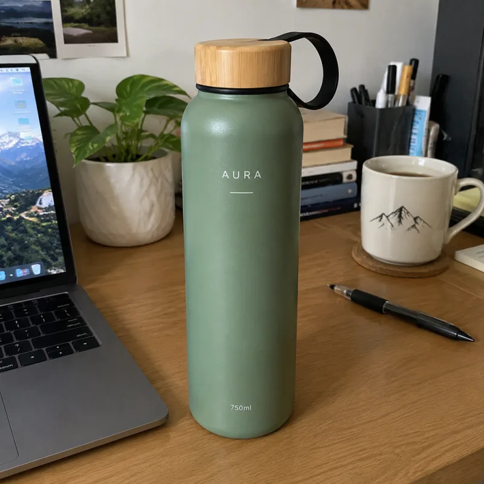
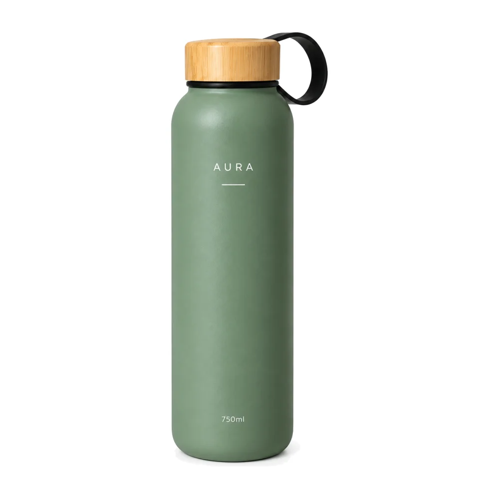
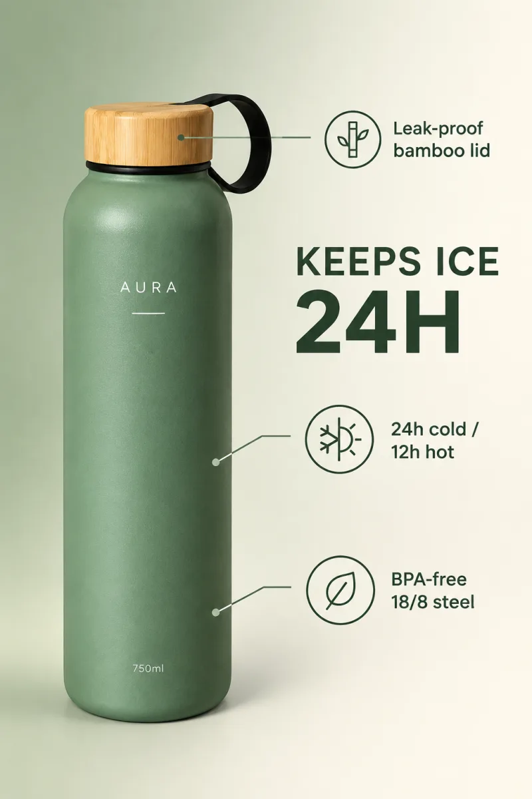
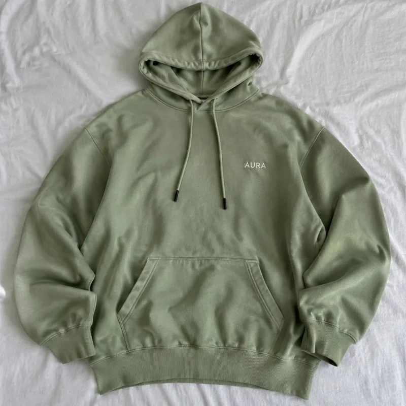
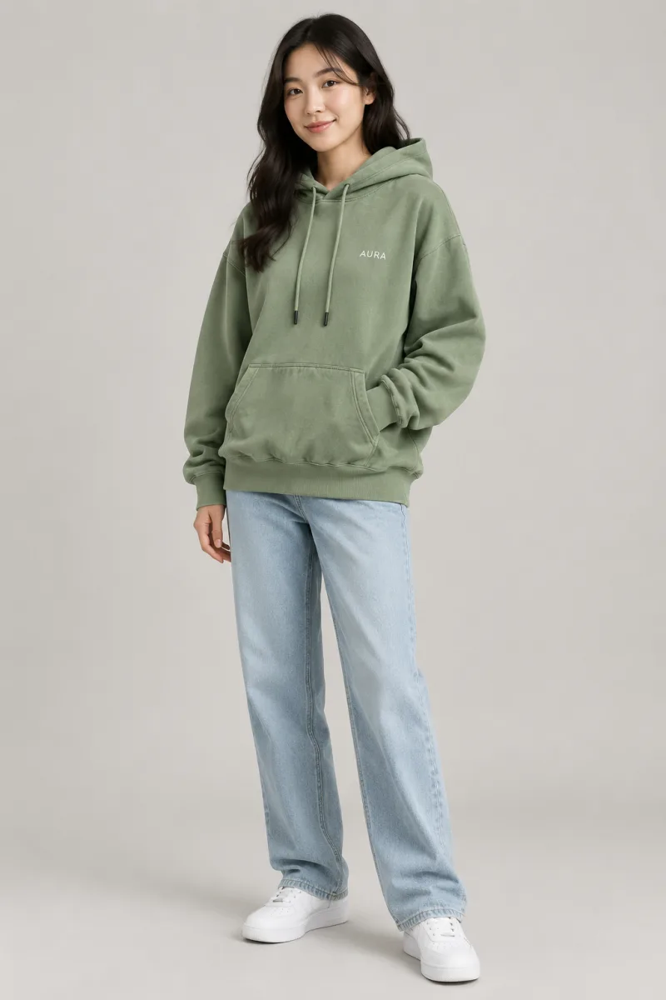

开源12个电商出图Agent Skills：GPT Image 2.5一键出图
开源12个电商出图Agent Skills：GPT Image 2.5一键出图
一张手机随手拍的商品照，丢给 Claude Code / Codex / Cursor，直接出亚马逊白底主图、场景图、卖点图、小红书封面。本文介绍我刚开源的 ecommerce-image-skills ，包含安装、使用、出图方式和平台规则，MIT 协议，免费可商用。
项目地址：https://github.com/xianyu110/ecommerce-image-skills
一、做电商的出图痛点
做过电商的朋友应该都有体会：一个新品上架，光图片就要准备一大堆——
- 亚马逊主图要纯白背景、主体占比 ≥85% ，差一点就可能被判不合规；
- 详情页要场景图、卖点信息图、尺寸图、多角度图，还有 A+ 模块；
- 换个平台又要重新做：淘宝 750 宽详情长图、小红书 3:4 封面、Shopee / TikTok Shop 的大促 Banner……
请摄影 + 美工成本高、周期长；直接用 AI 生图又经常遇到一个尴尬问题：图很好看，但产品被改了 ——Logo 拼错、颜色跑偏、瓶身形状变了。
所以我把「拍商品图 + 美工做图」这件事，拆成了 12 个可以单独安装的 Agent Skill。
二、ecommerce-image-skills 是什么
ecommerce-image-skills 是一套面向电商出图的 Agent Skills，基于 GPT Image 2.5 （Flare / Sunburst 两个模型），覆盖 Amazon、淘宝天猫、Shopee、TikTok Shop、小红书等平台，可以在 Claude Code、Codex、Cursor 以及任何读取 SKILL.md 的 agent 里使用。
它和网上"一堆 prompt"的区别在于：
- 产品身份锁定 ：每个 skill 第一步先锁定产品的形状、颜色、Logo、文字，并原样带进每一条提示词，减少"越画越不像"。
- 平台规格内置 ：Amazon 主图（#FFFFFF、≥85%）、A+ 模块尺寸、淘宝 750 宽详情、小红书 3:4、各平台 Banner 尺寸都写进了 skill。
- 模型路由 ：默认用 Flare （快，适合出场景、多版本）；需要保留 Logo/文字或做局部编辑时切 Sunburst 。
- 脚本做确定性的事 ：白底/占比检查与修复、A+ 裁切、拼图、详情页拼接切片、批量换背景（支持断点续跑 + 预算上限）。
- 三种出图方式 ：agent 自带生图工具 / 配 API Key / 什么都没有时输出提示词 + 在线运行链接。
三、12 个 Skill 一览
| Skill | 功能说明 | 默认模型 |
|---|---|---|
amazon-white-background |
Amazon 白底主图：纯白 #FFFFFF、主体 ≥85%、无文字，附 Python 检查/修复脚本 | Sunburst |
lifestyle-scene |
生活场景图：厨房/户外/办公/健身等场景库，产品保真 | Flare |
model-try-on |
模特上身图：平铺/挂拍 → 模特试穿，保留面料、颜色、Logo | Sunburst |
selling-point-infographic |
卖点信息图：一图一卖点、图标+标注线，文案逐字确认 | Sunburst |
amazon-a-plus |
A+ 页面模块：970×600 / 970×300 / 300×300 / 1464×600 等，统一风格锁 + 裁切脚本 | Flare |
size-chart |
尺寸规格图：cm/inch 双单位、服装尺码表，数字只用用户提供的 | Sunburst |
multi-angle-set |
多角度套图：正/侧/背/顶/45°/细节，统一光位背景 + 拼图脚本 | Sunburst |
sale-banner |
大促 Banner：淘宝天猫 / Shopee / Lazada / TikTok Shop / Amazon 尺寸与大促配色 | Flare |
batch-background-swap |
批量换背景 / SKU 换色：断点续跑、重试、预算上限、CSV 日志 | Sunburst |
xiaohongshu-cover |
小红书封面 3:4：6 种爆款版式、大字标题、种草风 | Flare |
taobao-detail-long-image |
淘宝/天猫/拼多多 750 宽详情长图：分屏规划 + 拼接切片脚本 | Flare |
ecommerce-listing-suite |
总入口：按平台规划整套图，调度上面 11 个 skill 并质检 | Auto |
每个 skill 文件夹都自带所需脚本，互不依赖，只装一个也能用。
四、效果展示：同一张随手拍 → 多种电商图
下面的图都是 GPT Image 2.5 真实生成、未经 PS（白底图只跑了一次 check_main_image.py --fix，把近白像素统一为 #FFFFFF）。说明一下：输入的水杯「AURA」本身是 AI 生成的虚构产品，仅作演示。
输入：手机随手拍的水杯

① 亚马逊白底主图 （amazon-white-background，Sunburst；修复后 100% #FFFFFF，主体占比 87%）

② 生活场景图 （lifestyle-scene，Flare，户外徒步场景）
③ 卖点信息图 （selling-point-infographic，Sunburst，英文文案逐字渲染）

④ 小红书封面 （xiaohongshu-cover，Flare，中文大字标题 3:4）
⑤ 大促 Banner （sale-banner，Flare，11.11 Shopee / TikTok Shop 风格）
服装也能做：平铺卫衣 → 模特上身 （model-try-on，颜色、面料、胸口 Logo 保留）


完整提示词见仓库 docs/showcase-prompts.md。
五、安装：Claude Code / Codex / Cursor
先克隆仓库：
git clone https://github.com/xianyu110/ecommerce-image-skills.git
cd ecommerce-image-skills
然后按你用的工具复制到对应目录：
# Claude Code（全局；或复制到项目内 .claude/skills/）
mkdir -p ~/.claude/skills && cp -r skills/* ~/.claude/skills/
# Codex
mkdir -p ~/.codex/skills && cp -r skills/* ~/.codex/skills/
# Cursor（项目内）
mkdir -p .cursor/skills && cp -r skills/* .cursor/skills/
只想要某一个？复制对应文件夹即可：
cp -r skills/amazon-white-background ~/.claude/skills/
也可以用 skills CLI 一键安装：
npx skills add xianyu110/ecommerce-image-skills
或者在 Claude Code 里执行：
/plugin marketplace add xianyu110/ecommerce-image-skills
六、使用：直接用自然语言说
装好之后不用记命令，直接对 agent 说：
用 amazon-white-background 把 ./photos/bottle.jpg 做成亚马逊白底主图，并跑检查脚本
给这个水杯出一整套 Amazon 7 张图（ecommerce-listing-suite），先给我计划
用 xiaohongshu-cover 做 3 个小红书封面，标题「一整天都冰的水杯」
把 ./photos 里 40 张图批量换成纯白背景，最多花 40 次调用
七、3 种出图方式
| 方式 | 条件 | 做法 |
|---|---|---|
| ① 内置工具 | agent 自带生图（如 Codex imagegen） | 自动使用 |
| ② API Key | 设置 GPTIMAGE_API_KEY，可选 GPTIMAGE_BASE_URL |
用 scripts/generate.py 出图 |
| ③ 无 Key | — | 输出最终提示词 + 一个 gptimage2.asia 在线运行链接，上传商品图即可 |
方式②示例（任何 OpenAI 兼容接口都行，默认 https://api.openai.com）：
export GPTIMAGE_API_KEY=sk-...
export GPTIMAGE_BASE_URL=https://tryallapi.com/v1
python skills/amazon-white-background/scripts/generate.py --model sunburst \
--image bottle.jpg --size 1024x1024 --prompt-file prompt.txt --out out/main.png
python skills/amazon-white-background/scripts/check_main_image.py out/main.png --fix out/main-fixed.png
模型怎么选？ 新场景、背景、版式、快速出多版本草稿用 Flare （gpt-image-2.5-flare）；必须保留 Logo / 标签 / 小字、局部编辑（换背景、换色、去杂物）、最终主图和文字密集的信息图 / 尺寸表用 Sunburst （gpt-image-2.5-sunburst）。
八、平台规则要点（以亚马逊主图为例）
amazon-white-background 内置的规则：
| 规则 | 要求 |
|---|---|
| 背景 | 纯白 RGB 255,255,255（#FFFFFF） |
| 主体占比 | 产品占画面 ≥85% |
| 尺寸 | 最长边 ≥1000px 才能缩放，推荐 1600–2000px，最大 10000px |
| 格式 | 优先 JPEG（也接受 TIFF/PNG/GIF），sRGB |
| 内容 | 只能有售卖的产品；不加文字、徽章、边框、水印、道具 |
AI 生成的"白"往往不是严格的 #FFFFFF，所以配套的 check_main_image.py 会检查白底和主体占比，加 --fix 可以自动修复。其他平台也有对应规格：A+ 模块尺寸、淘宝 750 宽详情、小红书 3:4 等。
平台规则会变，上传前请再核对一下当前卖家后台的官方说明。
九、FAQ
Q1：没有 API Key 能用吗？
可以。agent 自带生图工具时会自动使用；什么都没有时，skill 会输出最终提示词和一个在线运行链接，打开上传商品图就能出图。
Q2：会不会把我的产品画走样？
每个 skill 第一步都会做"产品身份锁定"，并且只使用照片里看得到或你确认过的信息，不会编造规格、认证。保 Logo/文字的场景默认用 Sunburst。
Q3：可以批量处理吗？
可以，用 batch-background-swap，支持断点续跑、重试、预算上限和 CSV 日志，比如"最多花 40 次调用"。
Q4：能商用吗？
项目是 MIT 协议，可以自由使用和修改。
Q5：除了 Claude Code / Codex / Cursor 还能用在哪？
任何能读取 SKILL.md 的 agent 都可以。
十、写在最后
如果你在做亚马逊、淘宝、Shopee、TikTok Shop 或小红书，希望这套 skills 能帮你省下一些拍图和做图的时间。觉得有用的话，欢迎到 GitHub 点个 Star ⭐ ，也欢迎提 Issue / PR 补充新平台规格和模板。
- GitHub：https://github.com/xianyu110/ecommerce-image-skills